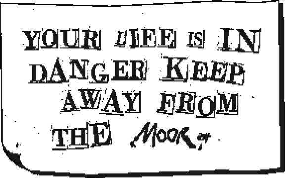
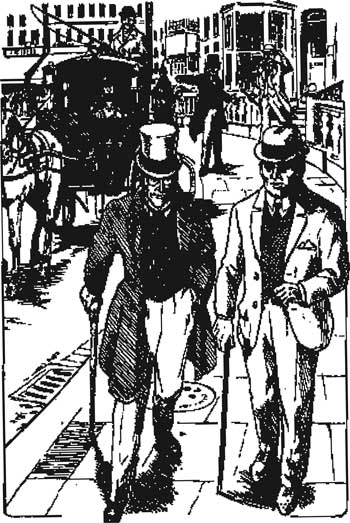

Listen to Part 1:
4
अगली सुबह डॉक्टर मोर्टिमर, सर हेनरी बेस्करविले को बेकर स्ट्रीट लेकर आए। सर हेनरी की उम्र करीब तीस साल थी। वह बहुत लंबे नहीं थे, लेकिन चौड़े और मज़बूत थे। वह एक मुक्केबाज की तरह दिखते थे।
“गुड मॉर्निंग, मिस्टर होम्स,” सर हेनरी ने कहा। “मैं कल लंदन पहुँचा और मेरे साथ पहले ही दो अजीबोगरीब घटनाएँ हो चुकी हैं।”
“कृपया बैठिए सर हेनरी,” होम्स ने कहा। “मुझे बताइए कि क्या हुआ है।”
“किसी को नहीं पता कि मैं नॉर्थम्बरलैंड होटल में ठहरा हुआ हूँ,” सर हेनरी ने कहा। “लेकिन मुझे एक पत्र मिला है। यहाँ वह पत्र है। आप देख रहे हैं, ‘मूर’ शब्द को छोड़कर, बाकी शब्द किसी अखबार से काटे गए हैं।”

“ये शब्द द टाइम्स अखबार से काटे गए हैं,” होम्स ने कहा।
“लेकिन वह व्यक्ति यह कैसे जान गया कि मैं कहाँ ठहरा हुआ हूँ?” सर हेनरी ने पूछा।
“मुझे नहीं पता,” होम्स ने कहा। “लेकिन आपने कहा था कि दो अजीब घटनाएँ हुई हैं। दूसरी अजीब घटना क्या है?”
Listen to Part 2:
“मैंने अपना एक बूट खो दिया है,” सर हेनरी ने कहा। “होटल में किसी ने मेरा एक बूट चुरा लिया है।”
“आपका एक बूट?” होम्स ने पूछा। “किसी ने सिर्फ़ एक बूट लिया?”
“हाँ,” सर हेनरी ने उत्तर दिया। “बूट नए हैं। मैंने उन्हें कल खरीदा था और कभी नहीं पहना। लेकिन सिर्फ़ एक बूट क्यों लेगा?”
“यह बहुत अच्छा प्रश्न है,” होम्स ने कहा। “मैं आपके होटल जाना चाहूँगा। शायद मुझे इसका उत्तर मिल जाए।”
“तो, कृपया हमारे साथ दोपहर के भोजन में शामिल हों,” सर हेनरी ने कहा। “अब, अगर आप मुझे माफ करें, तो मुझे कुछ अन्य काम करने हैं। क्या हम दोपहर दो बजे नॉर्थम्बरलैंड होटल में दोपहर के भोजन के लिए मिलेंगे?”
“हम दो बजे आएंगे,” होम्स ने कहा।
सर हेनरी बेस्करविले और डॉक्टर मोर्टिमर घर से निकलकर बेकर स्ट्रीट पर चल दिए। शरलॉक होम्स उन्हें अपने अध्ययन की खिड़की से देख रहे थे।
“जल्दी, वाटसन, हमें उनका पीछा करना होगा,” होम्स ने कहा।
मैंने अपनी टोपी पहनी और होम्स के पीछे सड़क पर चल पड़ा। “हम उनका पीछा क्यों कर रहे हैं?” मैंने आश्चर्य से पूछा।
“क्योंकि, मेरे प्रिय वाटसन, कोई और उनका पीछा कर रहा है,” होम्स ने कहा। “देखिए! वह आदमी है। उस कैब में! वहाँ?”
Listen to Part 3:
जहाँ होम्स इशारा कर रहे थे, वहाँ मैंने देखा। एक घोड़े वाली कैब सड़क पर धीरे-धीरे चल रही थी। कैब में एक काली दाढ़ी वाला आदमी बैठा था। वह सर हेनरी और डॉक्टर मोर्टिमर को देख रहा था, जो ऑक्सफ़ोर्ड स्ट्रीट की ओर जा रहे थे।

कैब में एक काली दाढ़ी वाला आदमी बैठा था।
वह सर हेनरी और डॉक्टर मोर्टिमर को देख रहा था।
जब होम्स ने उसकी ओर इशारा किया तो काली दाढ़ी वाले आदमी ने मुड़कर देखा। उसने हमें देखा और कैब ड्राइवर को चिल्लाकर कहा, “ड्राइव करो! जल्दी ड्राइव करो!” कैब ड्राइवर ने घोड़े को कोड़ा मारा और कैब एक कोने में गायब हो गई।
“मुझे लगता है कि हमारे एक प्रश्न का उत्तर हमें मिल गया है,” होम्स ने कहा। “काली दाढ़ी वाला वह आदमी सर हेनरी का नॉर्थम्बरलैंड होटल तक पीछा कर रहा था। वही वह आदमी है जिसने वह पत्र भेजा था।”